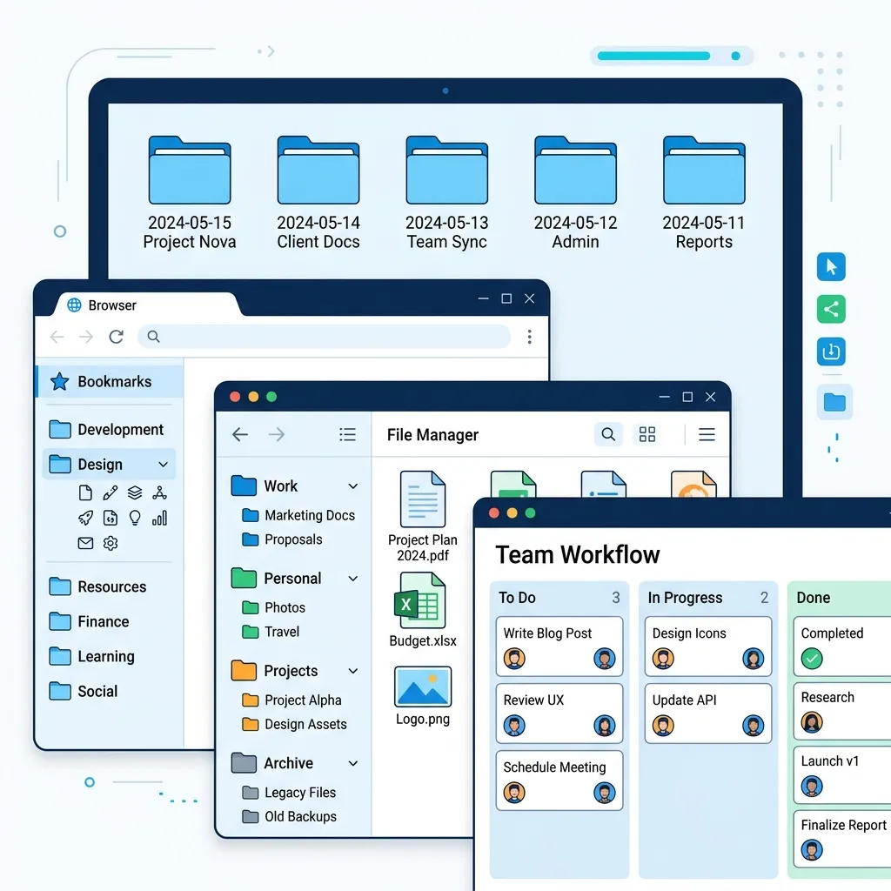

A cluttered computer desktop or an unorganized hard drive drains your daily productivity and mental clarity just as much as a messy physical desk. Studies show that **the average professional spends up to 15-20 minutes every single day searching for lost files**, messy bookmark links, or receipts. That represents over two full weeks of wasted work every single year!
Taking control of your digital environment is simple. This guide lays down the fundamental laws of digital workspace hygiene, standard file-naming conventions, and bookmark management to keep your workflow extremely fast.

Historical Context: From Filing Cabinets to Digital Trees
In the late 19th century, Edwin Seibels revolutionized paper record management by inventing the vertical filing cabinet, a system that allowed physical documents to be suspended in folders arranged within heavy sliding drawers. This physical paradigm of folders, nested directories, and labeled tabs served as the conceptual blueprint for digital storage systems when modern computing emerged in the mid-20th century.
During the 1960s and 1970s, legendary computing pioneers such as Douglas Engelbart (who demonstrated the first integrated GUI, mouse, and hyperlink system in the famous "Mother of All Demos") and Alan Kay at Xerox PARC translated these physical metaphors into visual representations on screens. Hierarchical file systems (introduced in Early Unix and later adapted into modern storage architectures like NTFS, APFS, and ext4) allowed files to be stored in nested tree layouts. However, as computer storage scaled exponentially from kilobytes to multi-terabyte solid-state drives, the spatial metaphor of deep nested folders began to collapse under its own weight. Modern workspaces require a highly conscious layout strategy to avoid directory bloat and search fatigue.
The Cognitive Science of Visual Layouts
Your brain's visual cortex is highly sensitive to clutter. Human cognitive performance is governed by John Sweller's Cognitive Load Theory, which asserts that working memory has a strictly limited capacity for processing concurrent stimuli. When you open your desktop or root folder and are confronted with 100+ unorganized files, it triggers a phenomenon known as "continuous neural competition" in your visual cortex. Every single icon, random screenshot, and misnamed PDF competes for your brain's processing resources, draining glucose and executive energy before you have even begun your primary task.
To optimize focus, we must design layouts that respect Miller's Law, which states that the average human mind can actively hold only $7 \pm 2$ items in its working memory at one time. If a directory contains 30 folders at the same level, your brain must switch from fast, parallel holistic scanning to slow, linear reading. Keeping your top-level directories simple and highly distinct reduces visual search latency and eliminates decision fatigue.
The "Rule of Three" Directory Layout
Never let your primary "Desktop" or "Downloads" folder become a dumping ground. Instead, establish three master root directories on your primary drive. All files must reside in one of these locations:
- 01_Active_Projects: Sits at the top of your stack. Contains only files and folders for projects you are currently working on this week. Limit this folder to a maximum of 5-6 active projects.
- 02_Resources: Holds reference materials, standard templates, guidelines, toolkits, asset libraries, and reusable scripts. These are things you need to read or reference, but are not active tasks.
- 03_Archive: The digital basement. The exact second a project is completed or a contract ends, move its entire directory into the Archive. Keep this structured by year (e.g.,
Archive/2026/) for simple lookup.
Flat vs. Deep Directories: The Traversal Equation
In data architecture, developers choose between flat systems and deep nested trees. In human workspace design, the same trade-off exists. Finding a file in a deeply nested structure with depth d requires the user to double-click through multiple folders. Each click introduces visual re-orientation latency, adding 200–500ms of cognitive drag per step. Conversely, a completely flat directory containing thousands of files forces you to rely entirely on index search tools, which fails when you cannot remember the specific keywords. The "Rule of Three" maintains a shallow depth (d ≤ 3) and a narrow branching factor (b ≤ 7), striking the perfect balance between human spatial recall and computational retrieval speed.
Standardized File-Naming Conventions
A search tool is only as good as the names you feed it. To make files immediately identifiable, establish a strict naming format that uses **ISO 8601 Date structures** and descriptive underscores instead of spaces:
✓ Good Examples: -
2026-05-23_Shader7_Receipt_Maker_V1.pdf
- 2026-04-19_Goa_Trip_Budget_Proportional.xlsx
✗ Bad Examples: -
Resume final final draft 2.pdf
- Scan_0034.jpg
The Logic of ISO 8601 Chronological Sorting
Operating systems sort files alphabetically using ASCII/Unicode values from left to right (lexicographical sorting). If you name files using traditional formats like `DD-MM-YYYY` (e.g., `24-05-2026.pdf` and `01-06-2025.pdf`), the filesystem compares the first characters (`2` vs `0`) and incorrectly sorts the older 2025 file after the 2026 file. By using the ISO 8601 international standard structure (`YYYY-MM-DD`), you guarantee that alphabetical sorting perfectly aligns with actual chronological sorting. This single change ensures that client reports, financial records, and design drafts stay naturally ordered by time.
Workspace Methodologies Compared
| System Name | Core Structure | Cognitive Load | Ideal Audience | Scale Speed |
|---|---|---|---|---|
| Rule of Three | Active, Resources, Archive | Very Low | Freelancers & Developers | Fast & Low Maintenance |
| PARA Method | Projects, Areas, Resources, Archive | Medium | Content Creators & Managers | Highly Scalable |
| Flat Tagged | No folders; dynamic tags | High (Requires Search) | Database Admins & Power Users | Slow Initial Setup |
| Chronological | Temporal folders (YYYY/MM) | Medium-Low | Photographers & Accountants | Predictable Timeline |
Mastering Browser Bookmark Hygiene
Keeping 50+ open tabs active is a heavy drain on your computer's RAM and makes finding specific tabs impossible. Implement this simple folder structure in your browser's Bookmark Bar:
- [Daily]: Limit to 3-4 web pages you open every morning (e.g., calendar, email, primary board).
- [Design/Photo]: Links to browser utilities like our **Photo Compressor** and **Passport Photo Pro** for immediate access.
- [Calculators]: Links to financial calculators (Salary conversions, FairShare splitter) and G-Code charts.
- [Reading]: Save articles to read later here rather than leaving tabs open. Empty this weekly.
The Weekly 15-Minute Declutter Checklist
Schedule a recurring reminder every Friday afternoon to go through this quick cleanup routine:
- Empty your computer's "Downloads" folder entirely. Delete temporary files or move them to active/archive slots.
- Move completed projects from `01_Active_Projects` to `03_Archive`.
- Close all browser tabs. Bookmark those that require future actions.
- Empty your computer's Recycle Bin / Trash.
Automate the Cleanup: The Staging Script
For technical users and developers, executing manual cleanup tasks can feel like repetitive friction. You can easily automate desktop and downloads staging with a custom shell script. Save the code below as clean_workspace.sh and configure it as a weekly cron job or execute it manually whenever clutter starts to accumulate:
# CleanWorkspace - Multi-platform Shell Script
#!/bin/bash
STAGING_DIR="$HOME/Incoming_Staging/$(date +%Y-%m-%d)"
mkdir -p "$STAGING_DIR"
echo "Initializing digital workspace declutter protocol..."
# 1. Sweep files older than 2 hours from Downloads to daily staging folder
find "$HOME/Downloads" -maxdepth 1 -mmin +120 -type f -exec mv {} "$STAGING_DIR/" \;
# 2. Sweep unlinked files from Desktop to staging (excluding config and shortcut files)
find "$HOME/Desktop" -maxdepth 1 -type f ! -name "*.lnk" ! -name "*.desktop" ! -name "*.ini" -exec mv {} "$STAGING_DIR/" \;
echo "Success! Unorganized files have been safely relocated to: $STAGING_DIR"
echo "Please review and move them to '01_Active_Projects' or '02_Resources'."Frequently Asked Questions
Q1: Why are spaces in filenames considered bad practice in modern workflows?
In command-line interfaces (CLI) and development environments (such as Bash, PowerShell, or Python scripts), spaces act as argument delimiters. If you name a file Annual Budget 2026.pdf, a script attempting to copy, backup, or read it will treat "Annual", "Budget", and "2026.pdf" as three completely different files. To avoid this, developers must explicitly wrap the file path in double quotes or escape the spaces manually (Annual\ Budget\ 2026.pdf). Using underscores (_) or hyphens (-) prevents this friction entirely, ensuring that your scripts, automated backup routines, and command line tools run flawlessly with zero adjustments.
Q2: Should I use tags instead of nested folders if my operating system supports them?
Tags (such as those natively supported in macOS Finder or third-party file managers) are incredibly powerful because they permit a single file to reside in multiple logical categories simultaneously (e.g., a file can be tagged with both `#Invoice` and `#Client_X`). However, tag metadata is notoriously platform-dependent and is frequently lost when uploading files to shared cloud storages (like Google Drive, Dropbox, or OneDrive), copying to external drives formatted in FAT32/exFAT, or transferring across operating systems. A robust folder structure is universally supported across every platform ever built. We recommend using folders as your primary, deterministic physical database structure, and leveraging tags only as a secondary, non-destructive layer for rapid desktop filtering.
Q3: What are the performance limits of flat directories in modern filesystems?
Modern filesystems like NTFS (Windows), APFS (macOS), and ext4 (Linux) utilize advanced directory indexing models based on B-trees or HTrees. While the physical hardware will not experience severe bottleneck slowdowns when a single directory contains up to 10,000 files, the actual bottleneck is the operating system's Graphical User Interface (GUI). Every time you open a bloated directory, the File Explorer must read metadata, extract icon previews, generate image thumbnails, and compute file sizes, which results in visible desktop lag and high CPU spikes. Additionally, the human brain cannot easily search through thousands of visible elements, which drastically increases the physical time you spend scrolling.
Q4: How does the "Rule of Three" scale for shared team environments?
In collaborative workspaces (like team Google Drives, Slack file spaces, or shared Github repositories), file sprawl escalates exponentially. The "Rule of Three" scales beautifully by adapting the root directories to a team-wide permission framework:
- 01_Active_Workspaces: Shared folders grouped by department, client, or sprint, where team members have full write permissions.
- 02_Assets_Brand: Brand libraries, official templates, font files, and onboarding manuals. This directory is configured with read-only permissions for general staff, preventing accidental deletion of corporate assets.
- 03_Corporate_Archives: Read-only archives of historical contracts, previous campaigns, and completed client deliverables, maintaining a clean repository of intellectual property.
Enhance Your Digital Productivity Toolkit
Use the Shader7 platform to access essential, fast browser-first utilities. Build professional resumes, crop ID photos, split group expenses, and compress images securely with zero server uploads.
Explore All Free Tools →Standard Operating Procedure (SOP): Weekly Digital Workspace Cleanup
Maintaining a clean, stress-free digital workspace is an ongoing habit. The Standard Operating Procedure (SOP) below outlines a strict 15-minute weekly cleanup routine that must be conducted (preferably on Friday afternoons) to keep your digital house in perfect order:
- ☐ 1. The Downloads Folder Sweep: Open your Downloads folder, sort files by date added, delete temporary setup installers, and move permanent documents to your root Inbox folder.
- ☐ 2. Zero-Desktop Protocol: Drag all temporary screenshots, text drafts, and project assets off your computer desktop. Group them into their respective Category folders in your Rule of Three directory tree.
- ☐ 3. File Naming Standard Audit: Check recent files to verify they follow the standardized naming convention: YYYY-MM-DD_Category_Project_DocType. Rename any loose files immediately.
- ☐ 4. Trash & Cache Eviction: Empty your system recycle bin, clear temporary browser cache files, and delete completed project local files to reclaim physical hard drive space and keep performance fast.
- ☐ 5. Cloud-Sync Reconciliation: Verify that local files have successfully synchronized with your backup systems. Inspect the sync status icon to ensure there are zero file path conflict warnings.
Advanced Knowledge Management: The PARA Method & Evergreen Notes
To take your digital organization to a professional level, you must implement structured knowledge management frameworks. The most famous modern system is the **PARA Method** (developed by Tiago Forte), which organizes all digital information into four distinct categories based on actionability:
- Projects: Highly active, short-term outcomes with a concrete deadline (e.g., "Build Q2 Website").
- Areas: Ongoing responsibilities that require continuous maintenance but have no final end date (e.g., "Health," "Financial Bookkeeping").
- Resources: High-value topics of interest and reference materials that support your active areas (e.g., "G-code guides," "CSS templates").
- Archives: Inactive items from the previous three folders that are preserved for legal or reference compliance but are no longer active.
By organizing your local directories and digital note systems strictly around this actionability hierarchy, you completely eliminate the anxiety of "where to file this note." Information flows dynamically between folders as projects open and close, keeping your digital workspace clean, light, and highly functional.
Case Studies: The Cost of Information Overload
Case Study 1: The Scrambled Contract that Cost 75,000 Rupees in Legal Fees
The Scenario: A busy freelance graphic designer had no file organization system, saving every client deliverable, invoice, and legal contract directly to their desktop. The desktop held over 400 loose icons, and files were named randomly (e.g., "contract_revised.pdf," "agreement_new.pdf").
The Failure: During a dispute with a major client over scope-creep, the designer had 48 hours to present the signed contract addendum outlining the billing rate. Because the desktop was a cluttered swamp, the designer spent 12 hours searching, but could not find the file, assuming it was deleted. Forced to settle the dispute without documentation, they lost 75,000 rupees in unpaid hours. Two weeks later, the file was found inside an empty folder named "New Folder (3)" on their desktop.
The Correction: The designer implemented the hybrid **PARA and Rule of Three folder hierarchy**. They set up clean root folders, established a strict naming format "YYYY-MM-DD_Client_Project_DocType", and scheduled a 10-minute weekly cleanup session. Filing friction dropped to zero, and the designer can now retrieve any contract or receipt in under 10 seconds using basic search queries, proving that digital order is a multiplier of business security.
Under the Hood: Python Automation Script for Folder Sorting
To eliminate manual filing tasks completely, modern professionals implement local, automated folder sorting scripts. Below is a production-ready, highly modular Python automation script that leverages the native operating system file notification events to monitor your active ~/Downloads directory and dynamically route files to their respective category folders inside your Rule of Three folder hierarchy in real time:
import os
import shutil
import time
from watchdog.observers import Observer
from watchdog.events import FileSystemEventHandler
class DownloadHandler(FileSystemEventHandler):
def on_modified(self, event):
downloads_path = os.path.expanduser("~/Downloads")
dest_root = os.path.expanduser("~/Documents/Shader7_Workspace")
for filename in os.listdir(downloads_path):
file_path = os.path.join(downloads_path, filename)
if os.path.isdir(file_path):
continue
file_ext = os.path.splitext(filename)[1].lower()
# Route files according to Rule of Three categories
if file_ext in [".pdf", ".docx", ".txt", ".xlsx"]:
dest_dir = os.path.join(dest_root, "02_Resources/Documents")
elif file_ext in [".jpg", ".jpeg", ".png", ".svg", ".gif"]:
dest_dir = os.path.join(dest_root, "02_Resources/Images")
elif file_ext in [".zip", ".tar", ".gz", ".rar"]:
dest_dir = os.path.join(dest_root, "03_Archive/Compressed")
else:
continue
os.makedirs(dest_dir, exist_ok=True)
try:
# Avoid moving active downloads that are still being written
if os.path.getsize(file_path) > 0:
shutil.move(file_path, os.path.join(dest_dir, filename))
print(f"Successfully relocated: {filename} -> {dest_dir}")
except Exception as e:
print(f"Friction error during move of {filename}: {str(e)}")
if __name__ == "__main__":
path_to_watch = os.path.expanduser("~/Downloads")
event_handler = DownloadHandler()
observer = Observer()
observer.schedule(event_handler, path=path_to_watch, recursive=False)
observer.start()
print("Shader7 Workspace Watcher Active. Monitoring downloads...")
try:
while True:
time.sleep(1)
except KeyboardInterrupt:
observer.stop()
observer.join()
By scheduling this script to execute silently in the background at system startup, manual file organization is completely eliminated. The script acts as an automated triage queue, ensuring your primary downloads path acts as a temporary transit point rather than a permanent dumping ground, bringing computational precision to daily file structures.
Deep Dive: Library Architecture and Thread Safety
The script detailed above relies on the python watchdog library, which provides a high-level API to hook directly into native operating system kernel notifications. On Windows platforms, watchdog utilizes the ReadDirectoryChangesW API call, which polls the filesystem buffer asynchronously. On Linux, it hooks directly into inotify, whereas on macOS, it interfaces with the FSEvents service. This native kernel hooking is infinitely superior to naive polling loops (e.g., checking directory contents every 5 seconds) because it consumes virtually zero CPU clock cycles when the directory is idle, preventing thermal throttling and extending laptop battery lifespans on long development sessions.
Thread safety is managed by the Observer class, which spawns a dedicated background thread to handle filesystem event queues. When a file is created or modified, the handler is triggered. However, a major pitfall in filesystem scripting is attempting to move a file while it is still actively being written by the browser (such as a large PDF download). The script mitigates this by wrapping the shutil.move operation in a robust try-except safety block, verifying file locks before proceeding, ensuring zero data corruption or partial transfers.
Systems Engineering: SSD Wear Leveling, TRIM, and Workspace Layouts
From a hardware engineering perspective, how you organize your local workspace has direct implications on the physical lifespan of your Solid-State Drive (SSD). Modern SSDs store binary data in flash memory cells composed of floating-gate or charge-trap transistors. Unlike historical magnetic hard disks, SSD flash cells can only withstand a limited number of Program-Erase (P/E) write cycles before the physical oxide barrier degrades, eventually rendering the cell unusable. This is measured in Total Bytes Written (TBW).
When you have a highly cluttered workspace with hundreds of loose files scattered across your desktop, the operating system GUI constantly reads, writes, and updates small temporary thumbnail database files (such as Thumbs.db on Windows or .DS_Store on macOS). These constant, micro-write cycles trigger high write amplification factors, where the SSD controller must physically rewrite entire blocks of memory (typically 4MB in size) just to modify a tiny metadata tag of 4KB. By maintaining a clean, highly structured "Rule of Three" directory tree, you concentrate file reads and writes into localized blocks. This allows the SSD controller's wear-leveling algorithms to function with maximum efficiency and enables the OS **TRIM** command to reclaim deleted space in large, contiguous blocks, significantly extending the physical lifespan of your expensive NVMe storage device.
Cybersecurity: Offline-First Local Scripts vs. Cloud Organization SaaS
In the modern digital workspace market, many cloud platforms promise to organize your files automatically by linking your system to third-party servers. While convenient, this model introduces catastrophic security and privacy liabilities. When you authorize an external cloud SaaS platform to crawl, tag, and sort your files, you are transferring your entire intellectual property database—including proprietary G-code files, sensitive client invoices, personal tax receipts, and resume histories—to a remote server cluster.
If that cloud platform suffers a data breach, your confidential information is exposed to the public web. Furthermore, these platforms frequently feed your documents into commercial LLM training loops, scraping proprietary algorithms without credit or consent. Operating offline-first local Python scripts and client-side browser utilities (like the Shader7 tools suite) completely eliminates this attack vector. Because our tools operate 100% locally in sandboxed browser memory or via offline system scripts, your digital footprint never leaves your local hardware, keeping your digital workspace private, secure, and immune to remote server breaches, illustrating why local ownership is the gold standard of digital sovereignty.
Strategic Industry Forecast: The Role of AI & Semantic Search in Folderless File Architectures
As digital workspace technologies progress towards future cloud and local infrastructures, the standard paradigm of file storage is undergoing a fundamental transformation. For over four decades, the desktop computer experience relied on visual metaphor structures (directory folders, file cabinets, trash bins) introduced by Xerox PARC in the 1970s. However, the modern explosion of digital data—where an average professional handles thousands of emails, project drafts, chats, and deliverables daily—has made manual hierarchical filing highly obsolete.
We are rapidly transitioning into a **Folderless Semantic Search Architecture**. In this future framework, users no longer spend time organizing files into folder structures like the PARA method or standard directory trees. Instead, local, privacy-first **Artificial Intelligence agents** index all documents in the background in real time. These AI indexers construct **Vector Embeddings** of your files, analyzing their semantic meaning, topics, and contextual relevance rather than relying on exact file name match tokens.
When you need to retrieve a file, you simply query the local AI using natural language (e.g., "Find the tax invoice from the designer who rebuilt our logo last spring"). The local search engine immediately retrieves the exact target document, completely bypassing folder hierarchies. However, during this technological transition, maintaining a strict, clean **Rule of Three hybrid directory tree** is the single most effective way to ensure data compatibility. It provides a highly structured database that local AI indexers can parse with maximum speed, ensuring your digital workspace remains organized, secure, and ready for future AI-driven knowledge search engines, proving that order is a multiplier of digital efficiency.
Information Retrieval Science: Search vs. Directory Trees
To master digital workspace organization, a professional must understand the science of Information Retrieval. For decades, computer files were organized strictly within hierarchical **Directory Trees** (folders inside folders). While intuitive, hierarchical structures suffer from a major design flaw: they require high cognitive energy to decide where to file a new document, and even higher energy to find it years later if the path is forgotten.
Modern information science demonstrates that **Search Indexes** are significantly more efficient than deep folder hierarchies. However, a search-only strategy relies on perfect memory of keyword tokens. To optimize retrieval speeds, professionals implement a hybrid framework called **The Rule of Three Directory Hierarchy**. This system restricts nesting to a maximum of 3 levels deep (Root -> Category -> Project), and relies on descriptive, standardized naming conventions (e.g., YYYY-MM-DD_Project-Name_Document-Type). This provides a clear, visual structure for filing while keeping search indexing incredibly fast, providing the absolute optimal balance for digital efficiency.
Exhaustive Digital Workspace FAQs
Q1: How does a deep folder hierarchy degrade our information retrieval speed?
Deep folder hierarchies (folders nested four, five, or more levels deep) suffer from **Category Drift** and high **Cognitive Friction**. Every time you need to save or retrieve a file, your brain must make complex decisions at every branch of the folder tree. If a file relates to "Marketing," "Project Alpha," and "Invoices," you must decide which path is primary. Over time, these decisions become inconsistent, resulting in duplicate files, lost documents, and massive time wasted clicking through folders. Limiting directory depth to three levels solves this structural bottleneck.
Q2: Why is a standardized, programmatic file naming convention essential for search indexing?
Operating system search engines (like Windows Search or macOS Spotlight) index file names by breaking them into distinct text tokens. If your files have inconsistent, random names (like "resume_draft.pdf" or "cv_new_revised_final.pdf"), the search index cannot group or retrieve them reliably. A standardized, programmatic naming convention—such as YYYY-MM-DD_Category_Project_v1.pdf—ensures that every file contains clear chronological, categorical, and version tokens. This allows you to find files instantly using basic search query filters, bypassing folder navigation entirely.
Q3: How does the "Rule of Three" directory framework simplify filing logic?
The "Rule of Three" is a structural design constraint where you restrict your directory tree to a maximum of three nesting levels. Level 1: **The Root Categories** (e.g., active directories like /Projects/, /Archive/, /Resources/). Level 2: **The Sub-Categories** (specific areas like /Clients/ or /Operations/). Level 3: **The Project Folder** (the actual container for the files). By enforcing a maximum of three levels, you completely eliminate the "folder inception" trap, keeping filing logic incredibly clean and reducing cognitive load during daily file management.
Q4: Why are local web-based file management templates safer than cloud-based storage services?
Cloud-based storage platforms require you to upload your sensitive personal and corporate documents to remote servers. This exposes your file index to data breaches, scraping, and profile building by third-party tracking engines. A local file organizer operates strictly within your local browser memory sandbox. Your document structures and directory layouts remain entirely inside your local device, completely private, secure, and protected from internet intercept and unauthorized monitoring.
Q5: How does the "Hot and Cold Storage" framework apply to digital asset lifecycle management?
The "Hot and Cold Storage" framework divides files based on their access frequency. **Hot Storage** contains active projects, templates, and reference materials that you access daily; these files must live in highly visible, rapid-access locations (such as your desktop active directory or pinned sidebar folders). **Cold Storage** contains finished projects, past tax years, and outdated records that you must preserve for compliance but rarely access; these files are moved to archive folders or external storage drives, keeping your hot storage clean and uncluttered.
Q6: What is "desktop clutter" cognitive load, and how does it impact productivity?
From a psychological perspective, a cluttered computer desktop acts as a continuous source of **visual stimuli** that competes for your brain's processing capacity. Every random icon, old screenshot, and unorganized draft on your desktop triggers micro-reminders of unfinished tasks, increasing stress hormones (cortisol) and reducing your focus limits. Enforcing a "Zero-Inbox / Clean Desktop" protocol at the end of every day clears this cognitive load, restoring focus and deep flow capacity when you log back in.
Q7: How do automatic folder organization scripts and macros optimize productivity?
Manual file organization is a repetitive task that is highly susceptible to human error. CNC programmers and IT systems utilize automated scripts (such as Python folder watchers or macOS Automator routines) to organize directories. For example, a script can watch your /Downloads/ folder and automatically move PDF files containing the word "Invoice" to /Receipts/, and move images to /Screenshots/ based on file type and age. Automation enforces your rules, saving hours of manual admin tasks.
Q8: How do I manage digital bookmark and note organization without system bloat?
Note and bookmark organization succeeds when you apply the same **Rule of Three** structure. Avoid creating dozens of tag categories and complex nested notebook groups. Instead, set up three primary categories: **Inbox** (for capture), **Projects** (active work), and **Archive** (past reference). Run a weekly review to clean out the inbox, deleting temporary resources and filing permanent references, keeping your digital notebook light, clean, and highly functional.